Time Series Analysis
I would suggest you read chapters 1 through 3 of Time Series Analysis and Its Applications 4th ed to get a introductory treatment of this topic.
I also strongly urge you to check out Rob Hyndman’s book on forecasting, which is free.
In time series analysis, we are typically interested in describing the pattern of variation of a variable over time. This can be extended to include multiple variables, but the largest number of applications involve a single variable.
Time series data are very different from other data you may have encountered. These are NOT the same as longitudinal data, nor are they the same as event history data. Sometimes these terms are thrown around as if they are the same, but they are not. Time series data are collected on a very regular basis, such as every minute, day, week, month, etc, and are typically measured for a long period of time, often years.
Much of time series analysis is descriptive, in that we are wanting to describe a few basic qualities of a time series.
In these examples, we will use both simulated and real data. Data come from two sources: - BLS monthly unemployment rates - Daily air quality for Bexar County
Data
Libraries
##
## Attaching package: 'dplyr'## The following objects are masked from 'package:stats':
##
## filter, lag## The following objects are masked from 'package:base':
##
## intersect, setdiff, setequal, union## Registered S3 method overwritten by 'quantmod':
## method from
## as.zoo.data.frame zoo## Registered S3 methods overwritten by 'forecast':
## method from
## autoplot.Arima ggfortify
## autoplot.acf ggfortify
## autoplot.ar ggfortify
## autoplot.bats ggfortify
## autoplot.decomposed.ts ggfortify
## autoplot.ets ggfortify
## autoplot.forecast ggfortify
## autoplot.stl ggfortify
## autoplot.ts ggfortify
## fitted.ar ggfortify
## fortify.ts ggfortify
## residuals.ar ggfortifyTime series data
Air quality data
These are daily data, which start at January 1, 2019. We tell R these are daily data by stating that the frequency is 365 (days)
#daily Air quality index from January 1, 2019 - March 31, 2020
ts1<-ts(bexar$AQI, frequency = 365, start=c(2019,1))
print(ts1) ## Time Series:
## Start = c(2019, 1)
## End = c(2020, 91)
## Frequency = 365
## [1] 106 53 32 38 52 41 41 45 35 42 31 42 39 58 55 28 33 30
## [19] 39 39 43 28 35 40 40 38 45 35 35 28 34 35 40 52 50 10
## [37] 28 47 49 52 55 14 23 23 38 56 61 53 56 19 23 34 41 35
## [55] 35 31 20 29 41 45 45 59 63 20 28 30 46 35 45 54 51 54
## [73] 59 60 52 46 50 54 67 25 20 38 56 61 67 71 63 48 46 60
## [91] 29 169 24 26 44 64 43 48 48 34 42 36 31 30 54 58 61 28
## [109] 53 29 34 43 36 35 39 38 42 43 41 36 34 37 38 46 55 72
## [127] 77 75 47 28 39 27 49 37 41 50 66 65 51 38 29 43 39 58
## [145] 44 44 44 44 52 56 63 75 31 34 40 45 43 32 46 62 58 54
## [163] 46 139 44 43 47 52 55 64 67 71 50 43 50 50 54 51 44 37
## [181] 43 42 67 41 52 65 77 47 58 100 67 51 58 44 51 64 44 64
## [199] 45 48 80 46 42 65 39 50 61 77 44 59 68 64 53 37 49 64
## [217] 43 59 48 74 28 27 38 47 53 53 49 56 75 81 71 58 97 68
## [235] 53 53 50 52 54 61 66 54 39 31 33 30 36 51 77 119 61 46
## [253] 45 61 126 64 45 52 64 51 55 70 63 58 56 59 45 70 71 66
## [271] 84 41 61 35 62 74 57 51 48 51 72 54 48 51 47 49 64 41
## [289] 36 34 44 61 65 48 49 61 119 119 90 62 53 58 66 53 67 64
## [307] 48 54 48 58 60 51 52 43 44 44 50 54 80 54 59 51 78 65
## [325] 47 42 52 60 67 57 51 49 48 37 50 52 49 48 39 74 61 35
## [343] 35 42 37 43 50 67 52 54 44 57 55 35 40 37 43 36 46 47
## [361] 58 37 36 40 35 45 41 43 50 74 44 74 49 31 31 37 43 53
## [379] 35 33 42 58 46 54 45 46 48 35 30 54 51 39 20 19 28 41
## [397] 60 61 45 38 34 34 24 50 57 24 31 27 45 53 70 73 55 57
## [415] 36 36 19 38 45 52 71 31 52 53 51 35 37 43 54 65 41 63
## [433] 70 68 24 33 47 43 71 77 40 36 41 50 34 50 60 60 77 83
## [451] 32 35 27 42 44 59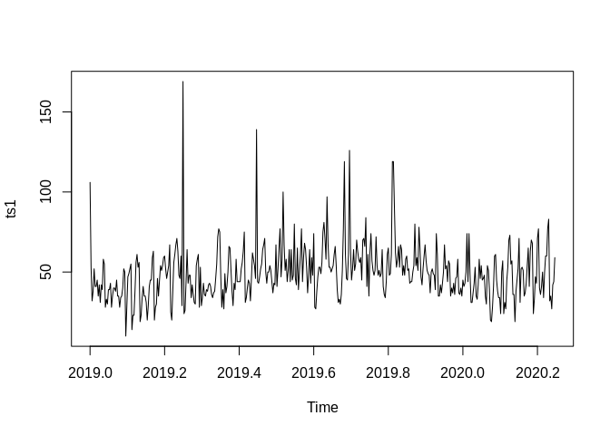
ggplot(data=bexar, aes(x=date, y=AQI))+geom_line()+labs(title = "Bexar County, TX - Air Quality Index",subtitle = "January 2019 to March 2020",
caption = "Source: EPA Air Data \n Calculations by Corey S. Sparks, Ph.D.",
x = "Date",
y = "AQI")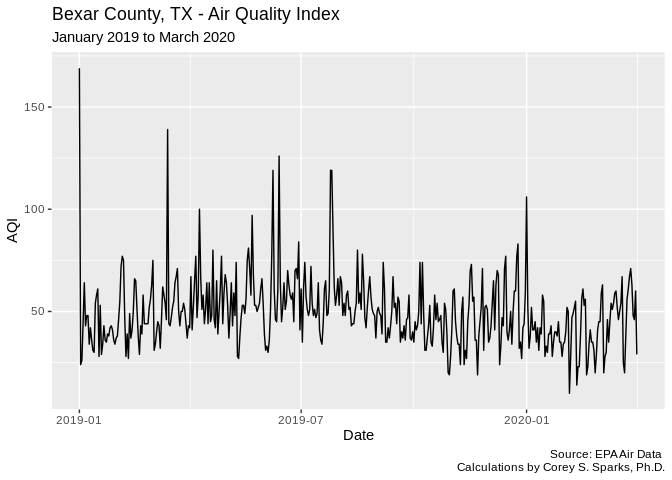
## date AQI
## 1 2020-01-01 106
## 2 2020-01-02 53
## 3 2020-01-03 32
## 4 2020-01-04 38
## 5 2020-01-05 52
## 6 2020-01-06 41
## 7 2020-01-07 41
## 8 2020-01-08 45
## 9 2020-01-09 35
## 10 2020-01-10 42BLS Unemployment data
This data set is a time series of monthly unemployment rates from 2000 to 2020. These data are Monthly, so we tell R that their frequency is 12 months (every month is repeated every 12 observations), with start and end dates of January 2000 and June 2020
#Montly unemployment Rate from January 2000 - June, 2020
unemp<-unemp[unemp$Series.ID=="LNU04000000",]
unemp<- t(unemp[-1])
unemp<-unemp[is.na(unemp)==F]
ts2<-ts(unemp, start=c(2000,1), end=c(2020,6), freq=12)
library(ggfortify)
autoplot(ts2)+labs(title = "US Monthly Unemployment Rate",subtitle = "January 2000 to June 2020",
caption = "Source: EPA Air Data \n Calculations by Corey S. Sparks, Ph.D.",
x = "Date",
y = "Unemployment Rate")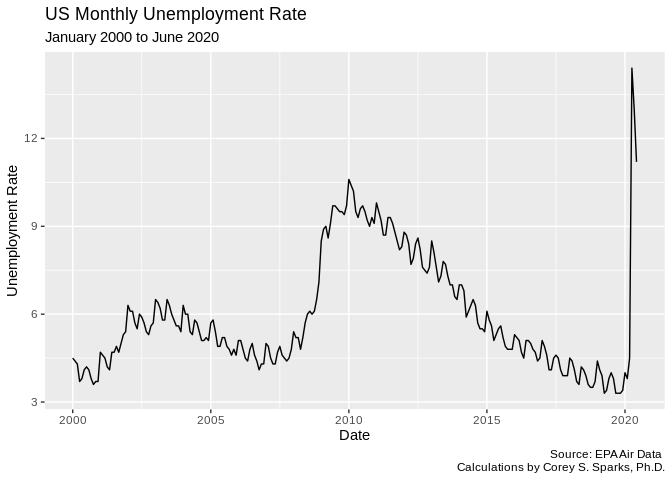
unemp2<-data.frame(rate=unemp, date=seq(from=as.Date("2000-01-01"), to=as.Date("2020-06-01"), by="months"))
head(unemp2, n=10)## rate date
## 1 4.5 2000-01-01
## 2 4.4 2000-02-01
## 3 4.3 2000-03-01
## 4 3.7 2000-04-01
## 5 3.8 2000-05-01
## 6 4.1 2000-06-01
## 7 4.2 2000-07-01
## 8 4.1 2000-08-01
## 9 3.8 2000-09-01
## 10 3.6 2000-10-01Fake data example - White noise
White noise can be though of as a random variable with no discernible trend or pattern to them. They are typically thought of as a random Gaussian variable. If we did a histogram of it, it would be a nice, pretty mound shaped, symmetric distribution.
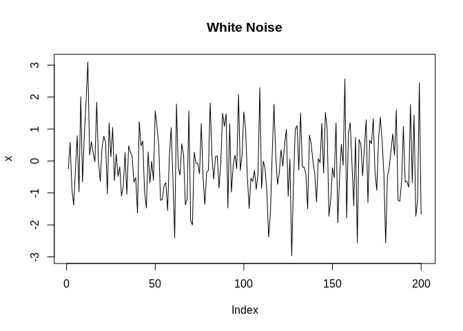
More fake data - Random walk with drift
Another type of random pattern are random walks. These are cumulative sums of random variables. They can increase or decrease over time, but they are only doing so based on recent previous events and their values.
w<-rnorm(200); x=cumsum(w)
wd<- w+.2; xd=cumsum(wd)
plot.ts(xd, main = "Random Walk with Drift", col=2, ylim=c(-30, 40))
lines(x, col=1)
abline(h=0, lty=2)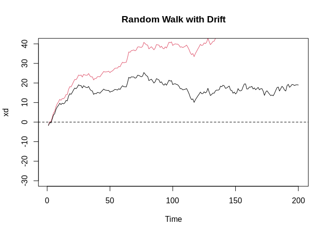
Signal and Noise
Often in time series data, we will have a noisy series, meaning that there is an underlying signal that we want to describe, but there is random white noise that accompanies it. Below, we simulate a cosine curve and add a small amount and a large amount of noise to it. With a small amount of noise, the signal is still visible, but with a large amount of random variation, the signal becomes almost indiscernible.
t<-1:200
c<-2*cos(2*pi*t/50)
w<-rnorm(200)
ts3<-ts(c+w)
par(mfrow=c(3,1))
plot.ts(c, main="signal")
plot.ts(c+w, main="signal+ low noise")
plot.ts(c+5*w, main="signal + large noise")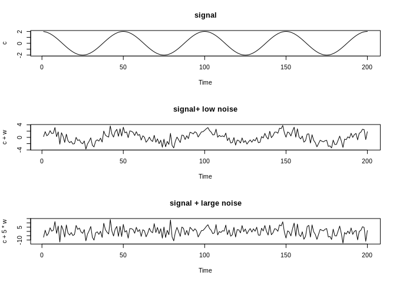
Some terminology
- lag = a value of the time series that occurs at some regular interval before the current value. For example, if this is our series:
## [1] 0.76023965 0.11379658 1.81570396 -0.59960278 0.07340230 0.30721595
## [7] -0.09357193 -1.83498487 0.44271755 0.05858398## [1] NA 0.76023965 0.11379658 1.81570396 -0.59960278 0.07340230
## [7] 0.30721595 -0.09357193 -1.83498487 0.44271755## [1] NA NA NA NA NA 0.7602397
## [7] 0.1137966 1.8157040 -0.5996028 0.0734023- Trend = increase or decrease in the mean of a variable, often over the long term. For example, this variable should have no trend:
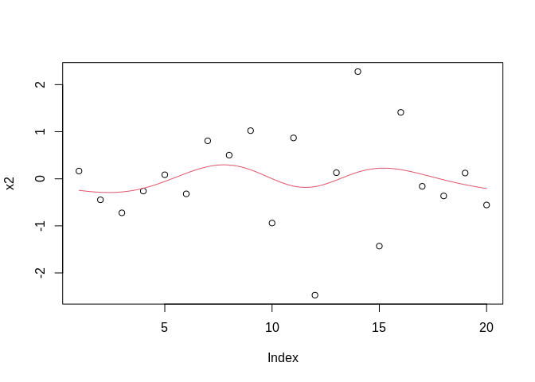
While this one increases over time:
b0<-0; b1=.5
t<-seq(1, 100, 1)
x3<-rnorm(100, b0+b1*t, 5)
tx3<-ts(x3)
plot(tx3)
abline(coef=coef(lm(x3~t)), col=3)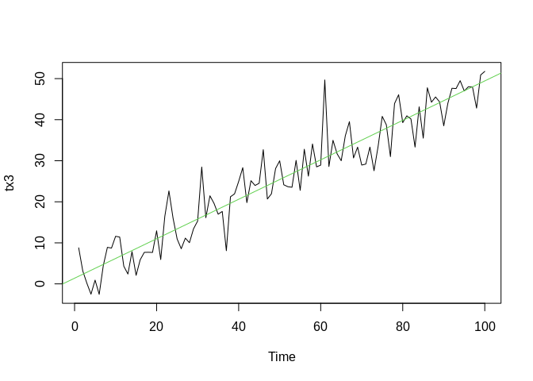
- Seasonality = This is a regular pattern of variation in a time series. It is a patter that repeats (like the cosine wave above) at a regular pattern within the data.
Auto-correlation in Time Series
Auto-correlation of a time series is \(\gamma (h)\) measures how correlated a time series is with different lags of itself.
\[\gamma (h) = E[(x_{t+h} - \mu)(x_t - \mu)\]
\[\rho(h) = \frac{\gamma(t+h,t)}{\sqrt{\gamma(t+h,t+h)\gamma(t,t) )}} = \frac{\gamma(h)}{\gamma(0)}\]
shows the correlation of a variable with itself at a given time lag \(h\).
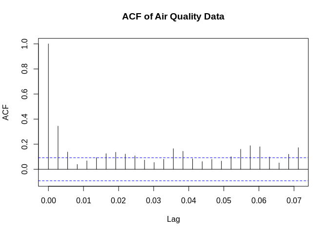
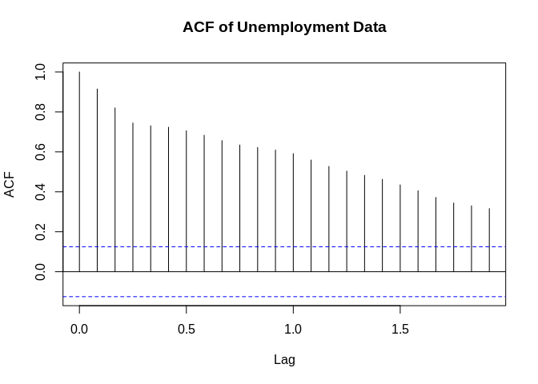
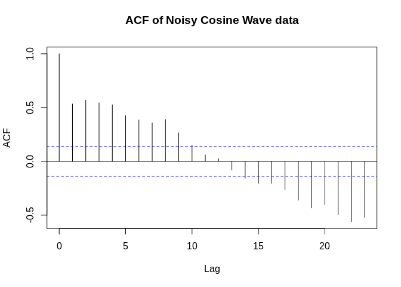
Stationary Time Series
A stationary time series is one that has no trend to it, in other words, the mean of the variable doesn’t change over the range of the observation. A second quality of a secondary series is that its variance is constant over time. The white noise data from above is stationary
We can often detect trend by using the linear regression model, with time as the predictor
##
## Call:
## lm(formula = AQI ~ date, data = bexar)
##
## Residuals:
## Min 1Q Median 3Q Max
## -35.561 -10.856 -1.901 9.003 114.077
##
## Coefficients:
## Estimate Std. Error t value Pr(>|t|)
## (Intercept) 473.796162 109.026847 4.346 1.71e-05 ***
## date -0.023405 0.006015 -3.891 0.000115 ***
## ---
## Signif. codes: 0 '***' 0.001 '**' 0.01 '*' 0.05 '.' 0.1 ' ' 1
##
## Residual standard error: 16.91 on 454 degrees of freedom
## Multiple R-squared: 0.03227, Adjusted R-squared: 0.03014
## F-statistic: 15.14 on 1 and 454 DF, p-value: 0.0001148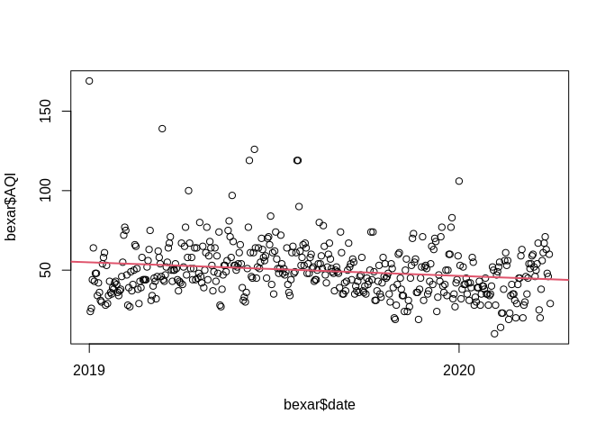
##
## Call:
## lm(formula = rate ~ date, data = unemp2)
##
## Residuals:
## Min 1Q Median 3Q Max
## -2.7887 -1.4043 -0.5443 1.0016 8.3051
##
## Coefficients:
## Estimate Std. Error t value Pr(>|t|)
## (Intercept) 5.341e+00 8.687e-01 6.149 3.17e-09 ***
## date 4.106e-05 5.853e-05 0.702 0.484
## ---
## Signif. codes: 0 '***' 0.001 '**' 0.01 '*' 0.05 '.' 0.1 ' ' 1
##
## Residual standard error: 1.984 on 244 degrees of freedom
## Multiple R-squared: 0.002013, Adjusted R-squared: -0.002077
## F-statistic: 0.4922 on 1 and 244 DF, p-value: 0.4836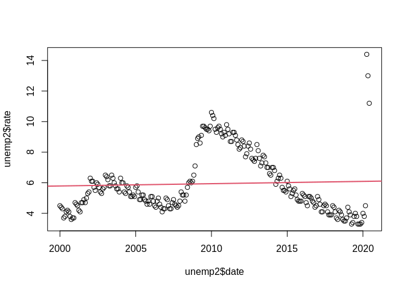
##
## Call:
## lm(formula = ts3 ~ seq(1, length(ts3), 1))
##
## Residuals:
## Min 1Q Median 3Q Max
## -3.7708 -1.1880 0.0631 1.3104 3.8297
##
## Coefficients:
## Estimate Std. Error t value Pr(>|t|)
## (Intercept) 0.0423797 0.2297245 0.184 0.854
## seq(1, length(ts3), 1) -0.0005129 0.0019820 -0.259 0.796
##
## Residual standard error: 1.618 on 198 degrees of freedom
## Multiple R-squared: 0.0003381, Adjusted R-squared: -0.004711
## F-statistic: 0.06697 on 1 and 198 DF, p-value: 0.7961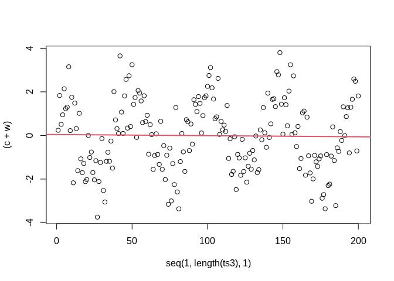
Non-stationary time series
A complement to the stationary series is a non-stationary series, which has a global trend to it, in that it increases or decreases in value over time
Removing trend in a series
Often we want to be able to measure auto-correlation without the trend being present, in that case, we can de-trend the data and make the series a stationary series.
If \(x_t\) is our time series, we can write it as being a sum of two things, the trend, \(\mu_t\) and \(y_t\) which is the stationary component.
\[x_t = \mu_t + y_t\] If the trend is a straight line, then we may have
\[\mu_t = \beta_0 + \beta_1 t\] which is just a linear regression, and in this case, the stationary component \(y_t\) will be the residuals from the model:
##
## Call:
## lm(formula = AQI ~ date, data = bexar)
##
## Residuals:
## Min 1Q Median 3Q Max
## -35.561 -10.856 -1.901 9.003 114.077
##
## Coefficients:
## Estimate Std. Error t value Pr(>|t|)
## (Intercept) 473.796162 109.026847 4.346 1.71e-05 ***
## date -0.023405 0.006015 -3.891 0.000115 ***
## ---
## Signif. codes: 0 '***' 0.001 '**' 0.01 '*' 0.05 '.' 0.1 ' ' 1
##
## Residual standard error: 16.91 on 454 degrees of freedom
## Multiple R-squared: 0.03227, Adjusted R-squared: 0.03014
## F-statistic: 15.14 on 1 and 454 DF, p-value: 0.0001148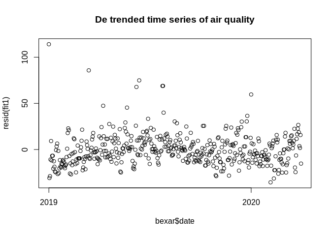
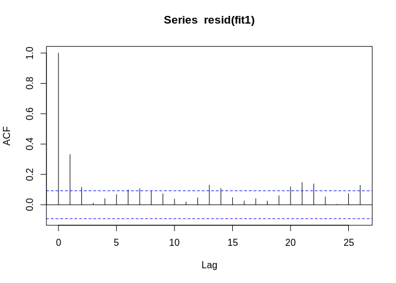
Differencing a time series
A way to remove seasonality in a time series is by differencing the series. The difference operation is:
\[\nabla^d = (1-B)^d\]
This is just the difference between the value of \(x_t\) and the value that occurs \(d\) values prior. For example, the first difference is often taken to remove seasonality in a series:
## [1] 1 2 3 4 5 6 7 8 9 10## [1] 1 1 1 1 1 1 1 1 1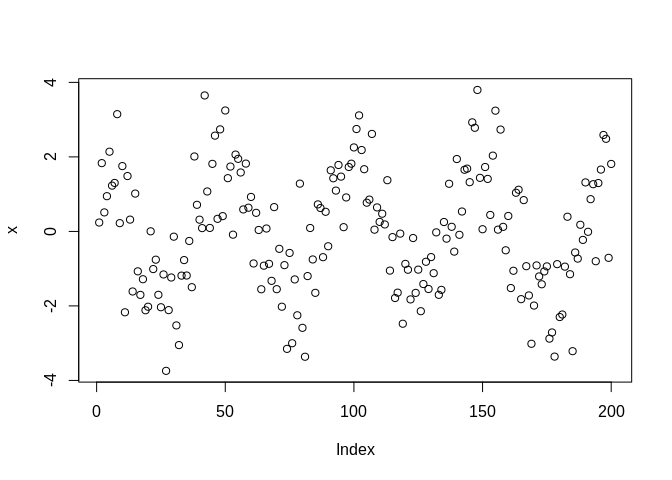
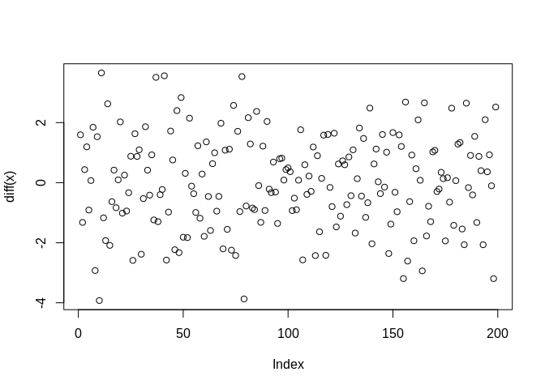 We see that the second plot no longer has the regular cosine wave pattern to it.
Smoothing a time series
One descriptive technique that is commonly used in time series analysis is a smoothing model for the data. There are several kinds of these and we will look at a few next.
Moving Average of Time Series
The moving average of a time series is:
\[ m_t = \sum_{j=-k}^k \alpha_j x_{t-j}\] This function takes a set of the \(k\) observations, centered around \(x_t\) and finds the mean of them. You’ve probably seen a lot of these during the COVID-19 pandemic
The reason we do this is to try to identify the systematic component or components in the data. If the data are noisy, like the cosine data above:
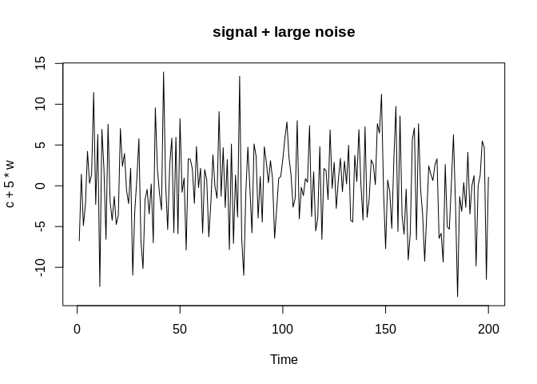
If we take a moving average of the series, we may be able to identify the signal in the noise:
plot(c+5*w, main="signal + large noise")
x=c+5*w
lines(c, col=1, lty=3)
lines(ma(x, order=5), col=2)#5 day moving average
lines(ma(x, order=20), col=3)#20 day moving average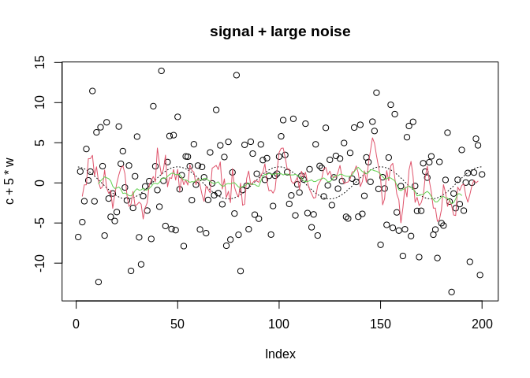
Kernel smoothing
Another modern approach is to use a smoothing spline or kernel-based smoother, which
plot(c+5*w, main="signal + large noise")
x=c+5*w
t<-1:length(x)
lines(c, col=1, lty=3)
lines(ksmooth(x=t, y=x, "normal", bandwidth=5), col=2)
lines(ksmooth(x=t, y=x, "normal", bandwidth=10), col=3)
lines(ksmooth(x=t, y=x, "normal", bandwidth=20), col=4)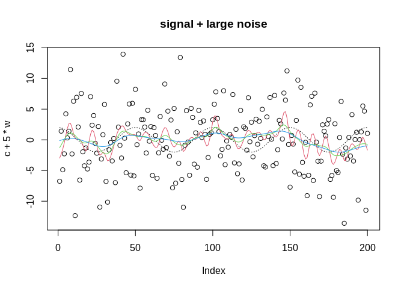
ARIMA Models
One of the fundamental models in time series analysis is the AutoRegressive Integrated Moving Average
An auto-regressive model is one that predicts a future value, based on weighted average of previous values. The weights will decrease as the distance in time between the current and past values increase.
An auto-regressive model of order p, abbreviated AR(p) is:
\[x_t = \phi_1 x_{t-1} + \phi_2 x_{t-2} + \dots +\phi_p x_{t-p} + w_t\] where, the \(\phi_p\) terms represent auto-regressive coefficients and where \(w_t\) is a Gaussian white noise residual. The auto-regressive operation can be more succinctly defined using the Backshift operator
\[Bx_t = x_{t-1}\]
and we can power this operator up to include greater lags of \(x_t\)
\[B^k x_t = x_{t-k}\]
A commonly used model when modeling temporal dependence is that AR(1) model, where the current value of \(x\) is predicted using the immediately preceding value:
\[x_t = \sum_{j=0}^\infty \phi^j w_{t-j}\]
Moving average models
The moving average model of order q, or MA(q) is :
\[x_t = w_t + \theta_1 w_{t-1} + \theta_2 w_{t-2} + \dots + \theta_q w_{t-q}\] where the \(\theta\) values are lags of the series, of order \(q\) and \(w_t\) is again Gaussian white noise.
ARMA process
If we combine these two, we get an AutoRegressive Moving Average, or ARMA(p,q) model.
\[x_t = \alpha + \phi_1 x_{t-1} + \phi_2 x_{t-2} + \dots +\phi_p x_{t-p} + w_t + \theta_1 w_{t-1} + \theta_2 w_{t-2} + \dots + \theta_q w_{t-q} \]
Which just combines the auto-regression and the moving average models.
ARIMA models
If we add a trend component to the time series model, we get the ARIMA(p,d,q) model
Forecasting
Forecasting is the process of predicting future values of a variable, based on the observed patterns of the variable from the past. If we have the observed time series, \(x_t\), then we may want to predict future values of the series at \(m\) periods in the future, \(x_{n+m}\)
In order to do this, we assume that \(x_t\) is stationary and the model parameters are known (but we typically estimate them from the data).
For example, if we want to forecast the air quality in Bexar County in the future, we would first estimate the parameters of the model we want, then apply that model to forecast the future values.
The forecast package is a great place to start for basic forecasting models.
Below are some simple methods, see Hyndmans’s ch 3 for these
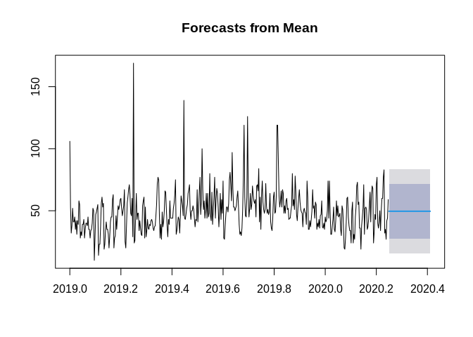
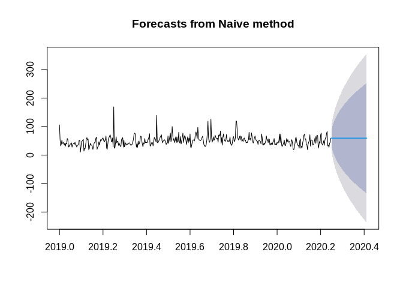
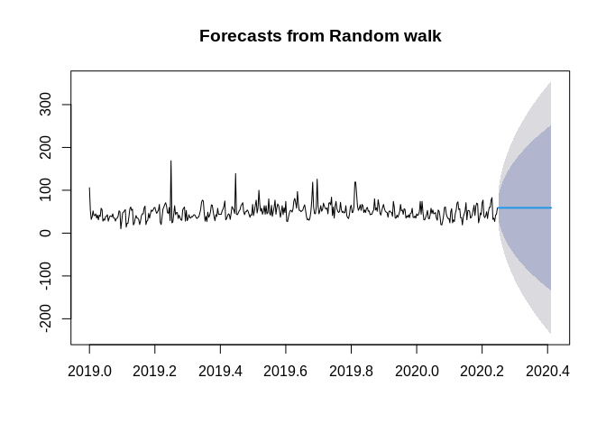
autoplot(ts1)+
autolayer(ma(ts1, 30), series="30 day MA")+
xlab("Day")+ylab("AQI")+
ggtitle("Air Quality in Bexar county, 30 Day moving average")## Warning: Removed 30 row(s) containing missing values (geom_path).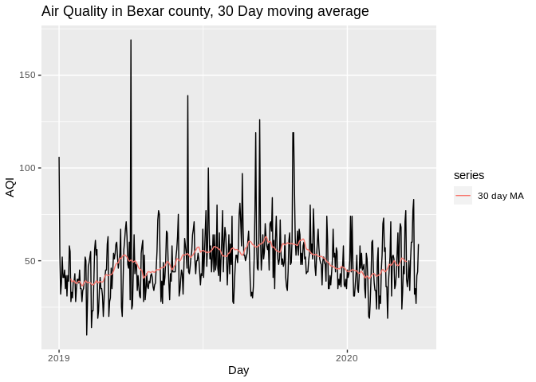 ## ARIMA forecasting
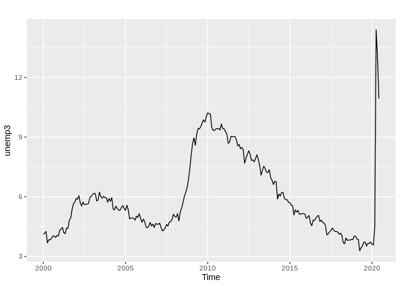
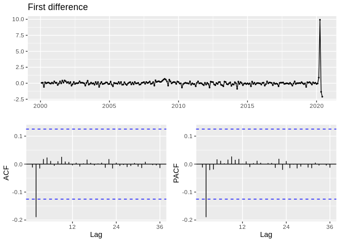
## Series: ts2
## ARIMA(0,1,0)(0,0,2)[12]
##
## Coefficients:
## sma1 sma2
## 0.3592 0.2814
## s.e. 0.1534 0.1252
##
## sigma^2 estimated as 0.5148: log likelihood=-266.77
## AIC=539.55 AICc=539.65 BIC=550.05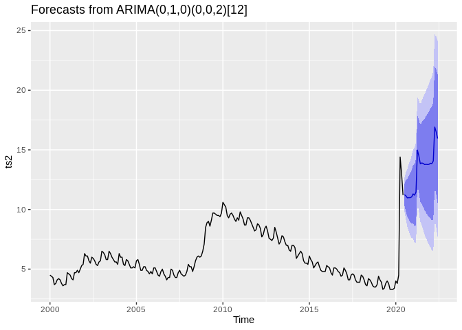
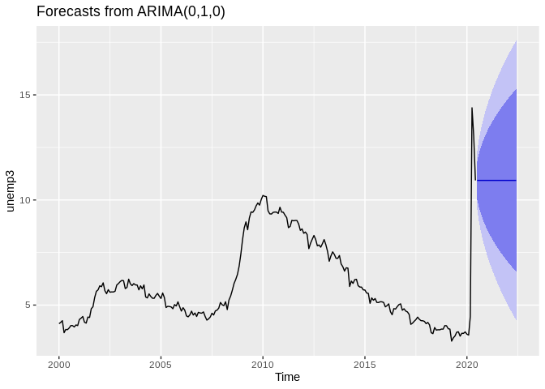
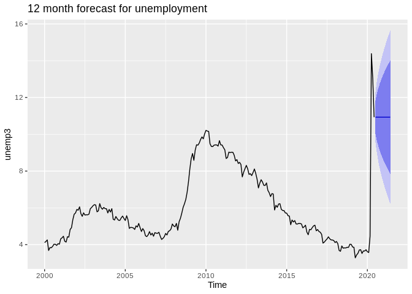
## Warning: The chosen seasonal unit root test encountered an error when testing for the first difference.
## From stl(): series is not periodic or has less than two periods
## 0 seasonal differences will be used. Consider using a different unit root test.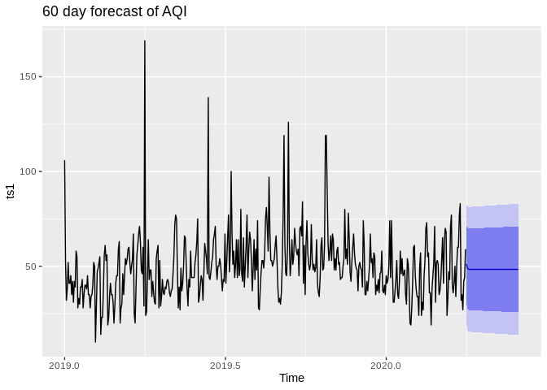
Classical Decomposition
One method of exploring the components of a time series is decomposition There are two basic forms of this, Additive and Multiplicative decomposition.
- Additive decomposition decomposes the series as:
\[x_t = R_t + T_t + S_t\] Where \(R_t\) is a residual, \(T_t\) is the trend of the data and \(S_t\) is the seasonal component of the data
ts2%>%
decompose(type="additive")%>% autoplot() + xlab("Day") +
ggtitle("Classical additive decomposition
of US Unemployment")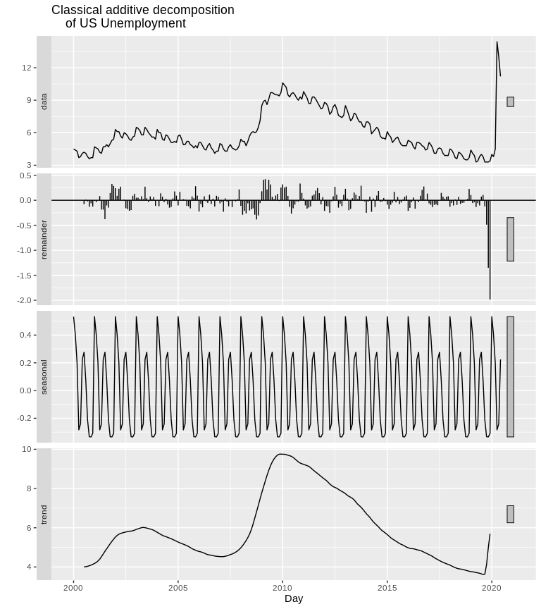
- Multiplicative decomposition: The second form of decomposition is multiplicative, this decomposes the series as:
\[x_t = R_t * T_t * S_t\]
ts2%>%
decompose(type="multiplicative")%>% autoplot() + xlab("Day") +
ggtitle("Classical multiplicative decomposition
of US Unemployment")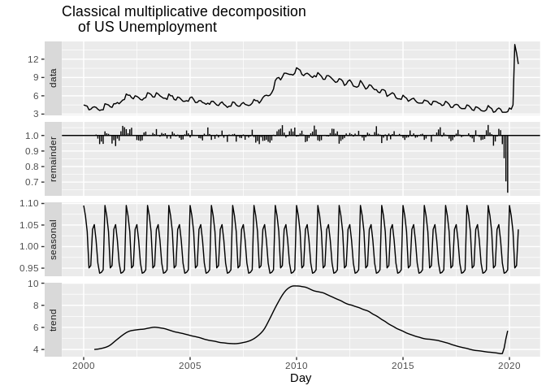
Seasonal adjustment
In unemployment data, the BLS usually presents the seasonally adjusted unemployment rate. This is because there is seasonality in the pattern of unemployment, with some months consistently having higher or lower unemployment. To produce this, they take the series and subtract out the seasonal component, as in the above decomposition.
adjust1<-decompose(ts2,type = "add")
adjust2<-ts2 - adjust1$seasonal
test<-data.frame(month = unique(unemp2$date), unemprate = adjust2)
ggplot()+geom_line(data=test, aes(x=month, y=unemprate, color="green"))+geom_line(data=unemp2, aes(x=date, y=rate, color="red") )+labs(title = "Seasonally Adjusted Unemployment Rate",
subtitle = "Jan 2000 to June 2020",
caption = "Source: IPUMS BLS Monthly Data \n Calculations by Corey S. Sparks, Ph.D.",
x = "Month",
y = "Unemployment Rate")+theme_minimal()+scale_color_discrete(name = "Rates", labels = c("Adjusted", "Raw"))## Don't know how to automatically pick scale for object of type ts. Defaulting to continuous.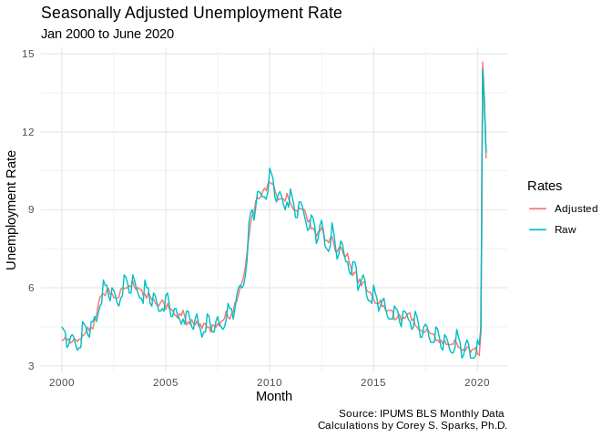
adjust3<-ts2 - adjust1$trend
test<-data.frame(month = unique(unemp2$date), unemprate = adjust3)
ggplot()+geom_line(data=test, aes(x=month, y=unemprate, color="green"))+geom_line(data=unemp2, aes(x=date, y=rate, color="red") )+labs(title = "Detrended Unemployment Rate",
subtitle = "Jan 2000 to June 2020",
caption = "Source: IPUMS BLS Monthly Data \n Calculations by Corey S. Sparks, Ph.D.",
x = "Month",
y = "Unemployment Rate")+theme_minimal()+scale_color_discrete(name = "Rates", labels = c("Adjusted", "Raw"))## Don't know how to automatically pick scale for object of type ts. Defaulting to continuous.## Warning: Removed 12 row(s) containing missing values (geom_path).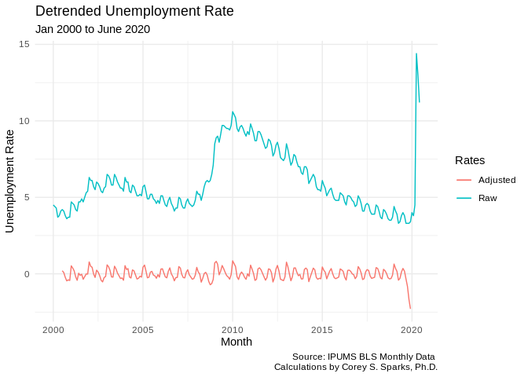